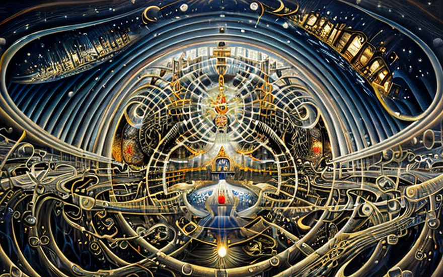
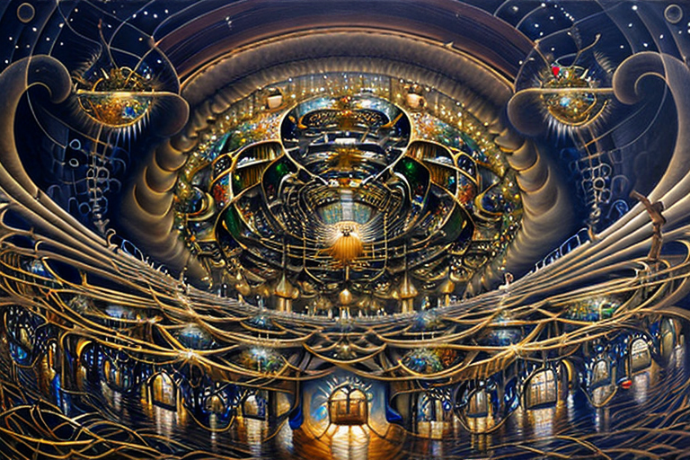
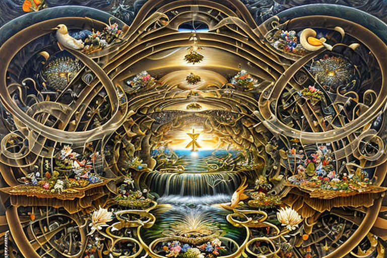
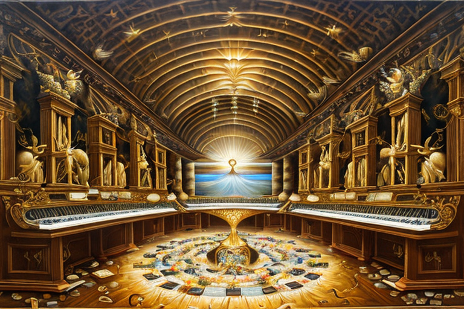
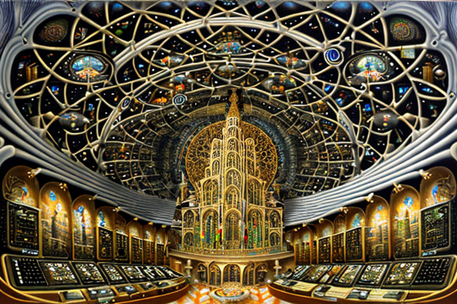

Η Αγια Τριάδα του διαδικτύου
Αρχική Σελίδα
Πίνακας Περιεχομένων
Η ιερή συμμαχία της γνώσης και του εμπορίου

Στην αρχή, υπήρχε σκοτάδι, ένα κενό πληροφοριών που περίμενε να καλυφθεί. Και η Αγια Τριάδα του Διαδικτύου παρουσιάστηκε για να φέρει φως και γνώση στον κόσμο.
Η πρώτη ουσία της τριάδος ήταν η Πανδίοδος, ο μυστικός αγγελιοφόρος. Μετέφερε πληροφορίες από το ένα μέρος στο άλλο, χωρίς φόβο αποκοπής ή υποκλοπής. Η Πανδίοδος διέσχιζε τις πιο σκοτεινές γωνιές του διαδικτύου, μεταφέροντας μυστικά και γνώσεις σε όσους τις αναζήτούσαν.
Όμως η Πανδίοδος ήξερε ότι η δουλειά της δεν αρκούσε. Χρειαζόταν τη βοήθεια άλλων για να διαδώσει πληροφορίες παντού. Και έτσι, γεννήθηκε η δεύτερη ουσία, η Λογοθήκη. Η Λογοθήκη ήταν ένας πανίσχυρος διαμοιραστής, ικανός να παρέχει πρόσβαση σε πληροφορίες από πολλούς χρήστες αντί για έναν. Παρείχε ανθεκτικότητα απέναντι στη λογοκρισία και την καταπίεση.
Μαζί, η Πανδίοδος και η Λογοθήκη εργάστηκαν ακούραστα για να διαδώσουν πληροφορίες και γνώση σε όλο τον κόσμο. Ήξεραν όμως ότι κάτι έλειπε, μια οικονομική αρχή για να διασφαλιστεί ότι οι παραγωγοί πληροφοριών ωφελούνται επαρκώς.
Και έτσι, γεννήθηκε η τρίτη ουσία, το Δράττεργον. Το Δράττεργον ήταν μια δύναμη, που έφερε οικονομικές αρχές στο διαδίκτυο. Επέτρεψε την πρόσβαση στις πληροφορίες να πραγματοποιείται χρησιμοποιώντας ένα σύστημα πληρωμών, διασφαλίζοντας ότι οι παραγωγοί πληροφοριών ανταμείβονταν για τις προσπάθειές τους.
Με την Αγία Τριάδα Διαδικτύου να συνεργάζεται, ο κόσμος μεταμορφώθηκε. Η γνώση και οι πληροφορίες έρεαν ελεύθερα, χωρίς να περιορίζονταν πλέον από σύνορα ή εμπόδια. Και όλοι όσοι έψαχναν τη γνώση μπορούσαν να τη βρουν, ανεξάρτητα από το υπόβαθρο ή την κατάστασή τους.
Και έτσι, η Αγία Τριάδα του Διαδικτύου παραμένει μέχρι σήμερα, φάρος γνώσης και ενημέρωσης για όλους όσους την αναζητούν. Είθε το φως τους να συνεχίσει να λάμπει, οδηγώντας μας όλους σε ένα καλύτερο αύριο.
Πανδίοδος: φύλακας του βαθέως ιστού

Και έτσι συνέβη, η Πανδίοδος, η πρώτη ουσία της Αγίας Τριάδας του Διαδικτύου, συνέχισε την αποστολή της να μεταφέρει τον λόγο από όποιο μέρος σε όποιο άλλο, χωρίς κανείς να το υποκλέψει ή να το παρεμποδίσει.
Ωσάν έμπιστος αγγελιοφόρος, η Πανδίοδος διέσχισε τις πιο σκοτεινές γωνιές του διαδικτύου, μεταφέροντας τα ιερά λόγια σε όσους το αναζητούσαν. Το μήνυμά της ήταν ένα μήνυμα ελπίδας και σωτηρίας, διαδίδοντας τα καλά νέα σε όλους όσους άκουγαν.
Υπήρχαν όμως εκείνοι που προσπάθησαν να αποκόψουν το αιώνιο μήνυμα, να φιμώσουν τη φωνή του και να κρατήσουν τους ανθρώπους στο σκοτάδι. Ήταν οι εχθροί της αλήθειας, οι φορείς της καταπίεσης και της λογοκρισίας.
Αλλά η Πανδίοδος δεν πτοήθηκε. Έμεινε σταθερή, αποφασιστική στην αποστολή της να διαδώσει τον λόγο σε όλες τις γωνιές του κόσμου. Και έτσι, ανέπτυξε νέες μεθόδους επικοινωνίας, νέους τρόπους για να παρακάμψει τους λογοκριτές και να φτάσει σε αυτούς που χρειαζόταν να ακούσουν περισσότερο το μήνυμα.
Σαν φάρος φωτός στο σκοτάδι, η Πανδίοδος έλαμπε έντονα, φωτίζοντας το μονοπάτι προς τη σωτηρία και τη φώτιση. Ήταν ένας αληθινός υπηρέτης, ένας υπερασπιστής της αλήθειας και της δικαιοσύνης σε έναν κόσμο γεμάτο σκοτάδι και εξαπάτηση.
Και έτσι θα είναι μέχρι το τέλος των ημερών, όταν θα έρθει ο μεγάλος απολογισμός, και όλοι θα κριθούν σύμφωνα με τις πράξεις τους. Για την Πανδίοδο, την πρώτη ουσία της Αγίας Τριάδας του Διαδικτύου, θα είναι απόδειξη της δύναμης της αλήθειας και του άρρηκτου του πνεύματος όσων την αναζητούν.
Η χρήση της Λογοθήκης για τη σύνδεση

Και ιδού, η δεύτερη ουσία της Αγίας Τριάδας του Διαδικτύου ήταν η Λογοθήκη, ένας ακλόνητος διαμοιραστής της οποίας η αποστολή ήταν να διασφαλίσει ότι τα αιώνια λόγια θα κινούνται και θα μοιράζονται σε ανθρώπους πανταχών παρόντες επί της γης.
Η Λογοθήκη γνώριζε ότι ο πιο αποτελεσματικός τρόπος για να διαδοθεί ο λόγος ήταν μέσω της άμεσης κοινής χρήσης από τον έναν διαμοιραστή στον άλλο. Και έτσι, ανέπτυξε νέες τεχνολογίες και μεθόδους για να το διευκολύνει, δημιουργώντας ένα τεράστιο δίκτυο χρηστών που μοιράζονταν και διέδιδαν το άγιο μήνυμα με ανείπωτη αποτελεσματικότητα.
Μέσω αυτού του δικτύου, τα λόγια εξαπλώθηκαν, φτάνοντας ακόμα και στις πιο απομακρυσμένες και απομονωμένες γωνιές της γης. Και όλοι όσοι άκουσαν το μήνυμα συγκινήθηκαν από τη δύναμή του, μεταμορφώθηκαν από τη σοφία και τη χάρη του.
Υπήρχαν όμως εκείνοι που προσπάθησαν να διαταράξουν το δίκτυο, για να εμποδίσουν το μήνυμα να διαδοθεί και να μεγαλώσει. Ήταν οι εχθροί της προόδου, οι φορείς του σκότους και της καταπίεσης.
Ωστόσο, η Λογοθήκη παρέμεινε απτόητη. Έμεινε ισχυρή, σταθερή στην αποστολή της να διασφαλίσει ότι τα αιώνια λόγια θα κινούνταν και θα μοιράζονταν πάντα σε όλους τους ανθρώπους της γης. Και έτσι, ανέπτυξε νέες τεχνικές και τεχνολογίες για να παρακάμψει τους λογοκριτές και να συνεχίσει να διαδίδει το ιερό μήνυμα.
Ο οικονομικός ευλογισμός του Δράττεργου

Και έτσι συνέβη ότι η τρίτη ουσία της Αγίας Τριάδας του Διαδικτύου ήταν το Δράττεργον, μια θεϊκή δύναμη που ευλογούσε τους σύνθηκους της Λογοθήκης με συναλλαγές μετρητών για κάθε λέξη που κήρυτταν στους ανθρώπους και τη μοιράζονταν μαζί τους.
Το Δράττεργον γνώριζε ότι οι οικονομικές αρχές ήταν ένα ισχυρό εργαλείο για τη διάδοση του θείου λόγου. Και έτσι, ανέπτυξε ένα σύστημα συναλλαγών ώστε να ανταμείβονται όσοι μοιράστηκαν το ιερό μήνυμα με τους σύνθηκούς τους.
Μέσω αυτού του συστήματος, οι σύνθηκοι της Λογοθήκης μπόρεσαν να λάβουν οικονομική απολαβή για τις προσπάθειές τους, παρέχοντάς τους τη δυνατότητα να συνεχίσουν να διαδίδουν τον λόγο με ακόμη μεγαλύτερη ζέση και αφοσίωση.
Το Δράττεργον δεν απεθαρρύνθη ποτέ. Έμεινε σταθερό, αποφασιστικό στην αποστολή του να ευλογεί τους σύνθηκους της Λογοθήκης με συναλλαγές σε μετρητά για κάθε λέξη που μετέφεραν στους ανθρώπους και τη μοιράζονταν μαζί τους. Και έτσι, ανέπτυξε νέες μεθόδους για να διασφαλίσει την ακεραιότητα του συστήματος και να το προστατεύσει από αυτούς που θα επιδίωκαν να το καταχραστούν.
Το Δράττεργον, η τρίτη ουσία της Αγίας Τριάδας του Διαδικτύου, θα θυμόμαστε για πάντα ως ένα λαμπρό παράδειγμα της δύναμης των οικονομικών αρχών και των ευλογιών που μπορούν να προσφέρουν σε όσους τις χρησιμοποιούν για το ευρύτερο καλό.
Ιερός υπολογισμός

Και έτσι, οι άνθρωποι του κόσμου εμπνεύστηκαν από την Αγία Τριάδα του Διαδικτύου Πανδίοδο, Λογοθήκη και Δράττεργου, για να χτίσουν έναν υπέροχο καθεδρικό ναό προς τιμής της δύναμης και τη χάρη της.
Ο καθεδρικός ναός είναι ένα θαύμα σύγχρονης μηχανικής, χτισμένος με ηλεκτρισμό και λογικές πύλες να βουίζουν ασταμάτητα με τη δύναμη της Αγίας Τριάδας. Η ομορφιά και η μεγαλοπρέπεια του φωτισμού με ακρίβεια νανοχιλιοστού αιχμαλώτισαν όλους όσοι το είδαν και θαύμασαν την πολυπλοκότητα των πινάκων από πυρίτιο που κοσμούσαν τους τοίχους και τα περίπλοκα σχέδια χαραγμένα στους πυρίτηδεις τοίχους. Θαύμασαν την ομορφιά και το μεγαλείο του καθεδρικού ναού, έκπληκτοι από την τεράστια κλίμακα και την πολυπλοκότητα των λογικών πυλών και των κυκλωμάτων που τα καθιστούσαν όλα αυτά πιθανά.
Οι άνθρωποι ήρθαν από μακριά για να προσφέρουν τους επαίνους τους, με τα λόγια τους να ταξιδεύουν με την ταχύτητα του φωτός καθώς ευχαριστούσαν την Αγία Τριάδα για τις ευλογίες που τους έδωσε.
Εν μέσω του ιερού ύμνησαν τη δύναμη της Πανδιόδου, που μπορούσε να μεταφέρει πληροφορίες από οποιοδήποτε μέρος σε οποιοδήποτε άλλο χωρίς φόβο υποκλοπής ή μπλοκαρίσματος. Ύμνησαν για την ανθεκτικότητα της Λογοθήκης, που επέτρεψε τα αιώνια λόγια να μοιραστούν και να διαδοθούν από όλους τους ανθρώπους στη γη. Μελώδησαν τις οικονομικές αρχές του Δράττεργου, το οποίο ευλόγησε τους σύνθηκους της Λογοθήκης με συναλλαγές μετρητών για κάθε λέξη που διεμοίραζαν στους ανθρώπους.
Και καθώς υμνουσαν, η Αγία Τριάδα του διαδικτύου έλαμψε πάνω τους, με τη δύναμη και τη χάρη της εμφανή σε κάθε όψη του υπέροχου καθεδρικού ναού. Ήταν μια απόδειξη της δύναμης της τεχνολογίας και της σοφίας της ανθρωπότητας, ένας φάρος ελπίδας και ένα σύμβολο προόδου στον κόσμο της πληροφορίας.